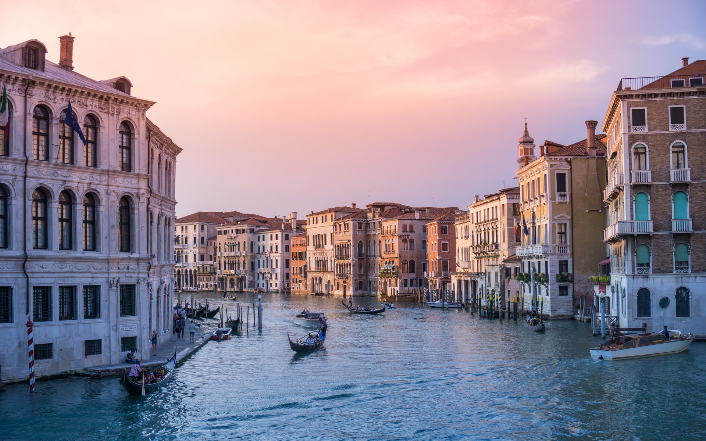

Italien (italienisch Italia [iˈtaːlja], amtlich Italienische Republik, italienisch Repubblica Italiana [reˈpubblika itaˈljaːna]) ist ein Staat in Südeuropa; seine Hauptstadt ist Rom. Das italienische Staatsgebiet liegt zum größten Teil auf der vom Mittelmeer umschlossenen Apenninhalbinsel und der Po-Ebene sowie im südlichen Gebirgsteil der Alpen. Der Staat grenzt an Frankreich, die Schweiz, Österreich und Slowenien. Die Kleinstaaten Vatikanstadt und San Marino sind vollständig vom italienischen Staatsgebiet umschlossen. Neben den großen Inseln Sizilien und Sardinien sind mehrere Inselgruppen vorgelagert. Als Kreuzweg der Zivilisationen des Mittelmeerraumes ist der italienische Beitrag zum kulturellen und historischen Erbe Europas und der Welt beachtenswert, das Gebiet des heutigen Italien war in der Antike die Kernregion des Römischen Reiches, die oberitalienische Toskana war das Kernland der Renaissance, ihr folgte von Rom ausgehend die Epoche des Barock.  Mit dem Risorgimento entstand der moderne italienische Nationalstaat: Von 1861 bis 1946 bestand unter dem Haus Savoyen das Königreich Italien, das rapide industrialisiert wurde, zu einer europäischen Großmacht aufstieg und ab den 1880er Jahren ein Kolonialreich in Nord- und Ostafrika errichtete. Die kostspielige und verlustreiche Teilnahme am Ersten Weltkrieg von 1915 bis 1918 führte zwar zur Vergrößerung des Staatsgebietes, aber auch zu schweren sozialen Unruhen und ebnete den italienischen Faschisten unter Benito Mussolini den Weg zur Macht. Das faschistische Regime herrschte von 1922 bis 1943/45 über Italien und führte das Land 1940 auf der Seite der Achsenmächte in den Zweiten Weltkrieg. Die Kriegsniederlage führte zum Verlust der Kolonien und zu vergleichsweise geringfügigen Gebietsabtretungen an den Nachbarstaat Jugoslawien. Im Juni 1946 beendete eine Volksabstimmung die Monarchie; die heutige Republik wurde ausgerufen.
wikipedia